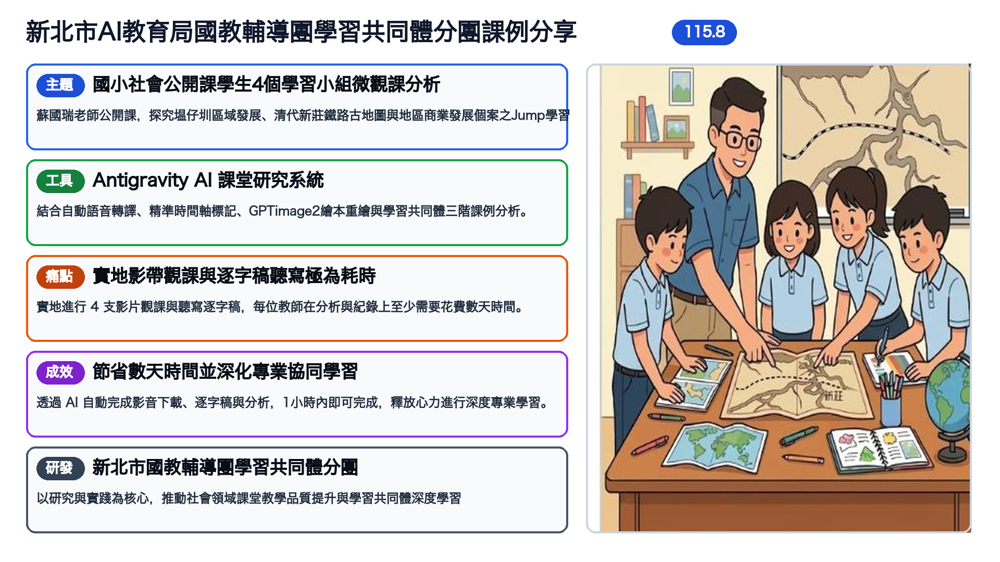

國小社會公開課學生 4 個學習小組微觀課全景分析 (School as Learning Community, SLC)
包含主題、工具、痛點、成效、研發 5 大核心區塊與清代新莊鐵路古地圖課堂探究圖解：

包含第一至第四小組 SLC 描述、詮釋、反思，以及 100% 格線對齊之綜合比較矩陣與全景結論。
免安裝 PowerPoint，直接於瀏覽器體驗高畫質 16:9 簡報展演。
包含完整逐字稿文字記錄與第 1 至第 4 小組細緻時間軸觀察脈絡。